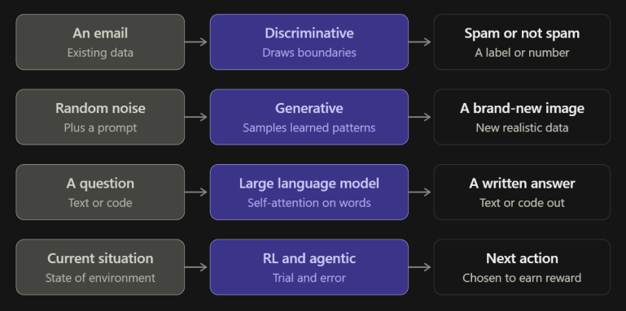
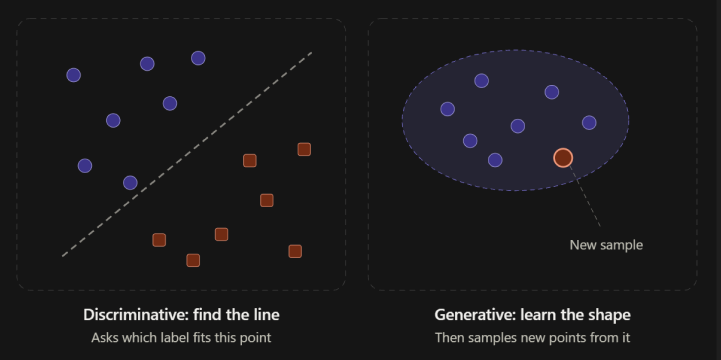

Different language models
AI Models: A Quick Comparison Summary
Artificial Intelligence models are generally defined by what they are designed to do and how they process data. They can be broken down into four primary categories:

1. Discriminative AI (Classifiers & Predictors)
- Goal: Categorize input data or forecast future numbers.
- How It Works: Learns boundary lines between different data types. It calculates conditional probabilities—asking "Given this data point, what label or class does it belong to?"
- Best Used For: Spam filtering, medical diagnosis, fraud detection, and financial forecasting.
2. Generative AI (Creators & Synthesizers)
- Goal: Produce brand-new, realistic data (images, video, audio, or 3D assets).
- How It Works: Learns the underlying structure and pattern of the training dataset. It samples from that learned pattern to generate completely new output.
- Key Architectures: Diffusion Models (gradually refining noise into clean images) and GANs (two networks competing to produce realistic results).
- Best Used For: Digital art, image editing, synthetic voice creation, and design tools.

3. Large Language & Sequence Models (LLMs)
- Goal: Understand, summarize, translate, and generate human language and code.
- How It Works: Powered by the Transformer architecture, which uses self-attention mechanisms to analyze relationships between words simultaneously rather than one at a time.
- Best Used For: Conversational assistants, automated code generation, document summarization, and translation.
4. Reinforcement Learning & Agentic Models
- Goal: Make autonomous decisions in dynamic environments to achieve a goal.
- How It Works: Learns through trial and error. An "agent" takes actions in an environment, receiving rewards for good moves and penalties for mistakes.
- Best Used For: Robotics, autonomous driving, strategic gaming (e.g., chess or Go), and automated multi-step workflows.
- Reference / Source List
- IBM: Generative AI vs. Predictive AI: What's the Difference? (IBM Think Library)
- Microsoft AI Hub: Understanding Types of Machine Learning Models
- GeeksforGeeks: Generative vs. Discriminative Models in AI